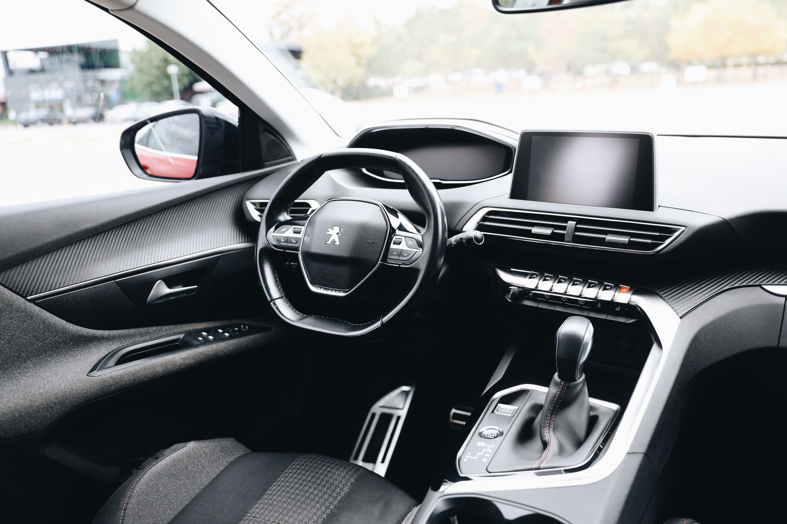

Réponse directe : sur un siège tissu, on tamponne, on ne frotte jamais. Frotter étale la tache et abîme les fibres en les faisant boulocher. Le bon produit dépend du type de tache : bicarbonate pour le quotidien, vinaigre blanc pour l'organique, eau gazeuse en urgence.
Le geste à ne jamais faire sur une tache
Frotter semble logique — ça ne l'est pas. Le mouvement de frottement pousse le liquide plus profondément dans les fibres du tissu au lieu de l'en extraire, et abîme visuellement la texture par endroits. La bonne méthode, dans l'ordre :
- Tamponnez, ne frottez jamais — le tamponnement absorbe sans étaler.
- Testez toujours le produit sur une zone cachée avant de l'appliquer sur la tache elle-même.
- Travaillez de l'extérieur vers l'intérieur de la tache, pour ne pas l'agrandir.
Comment enlever une tache de café sur un siège de voiture ?
Le café est une tache organique légèrement acide. Tamponnez d'abord avec un chiffon sec pour absorber le maximum de liquide, puis appliquez du vinaigre blanc dilué à l'eau. Si le café vient tout juste d'être renversé, l'eau gazeuse est le réflexe d'urgence le plus efficace : le gaz carbonique aide à décoller les pigments avant qu'ils ne pénètrent le tissu.
Comment enlever une tache de sang ou de vomi ?
Ce sont les taches organiques les plus tenaces, et l'erreur la plus fréquente est d'utiliser de l'eau chaude — la chaleur fixe les protéines du sang dans les fibres au lieu de les dissoudre. Toujours de l'eau froide, avec du vinaigre blanc qui neutralise à la fois la tache et l'odeur associée.
Une tache ancienne peut-elle encore partir ?
Ça dépend de ce qui l'a causée. Une tache de boisson ou de nourriture, même ancienne, réagit encore bien au bicarbonate de soude en pâte laissée à agir. Une tache organique ancienne (sang, urine) qui a eu le temps de sécher en profondeur dans la mousse du siège, en revanche, demande un traitement par injection-extraction — un nettoyage de surface ne l'atteint plus.
Quand appeler un professionnel plutôt que tenter soi-même
Trois cas où l'intervention maison touche sa limite : une tache déjà traitée sans succès (le risque d'auréole augmente à chaque tentative), une tache qui couvre une large surface, ou une odeur associée à la tache qui persiste malgré le nettoyage. Le traitement par injection-extraction professionnel travaille en profondeur dans la mousse du siège, là où un nettoyage de surface s'arrête.
Chaque tentative ratée sur une tache réduit les chances de la suivante — mieux vaut un bon geste dès le départ qu'un rattrapage après trois essais.
On s'occupe de votre voiture ?
Lavage à domicile en Alsace, sur rendez-vous 7j/7.